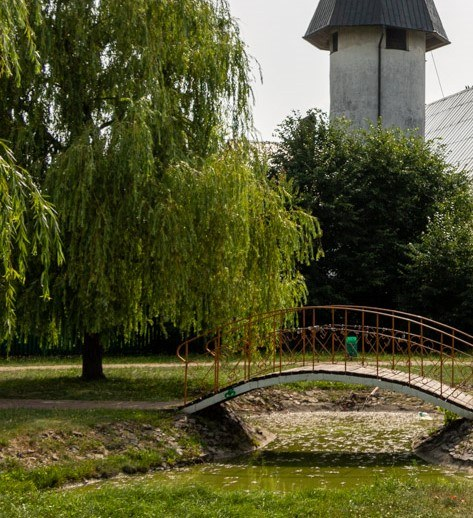
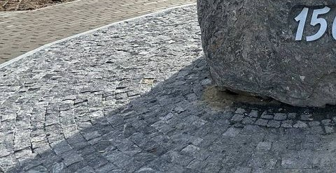
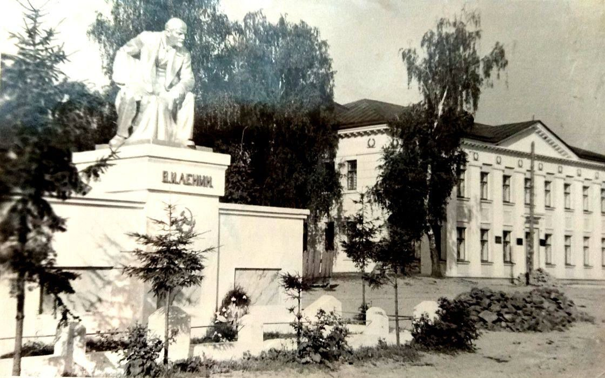
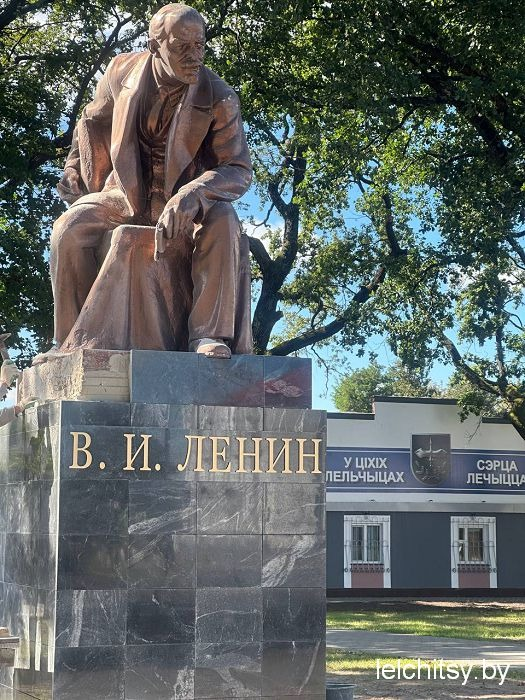
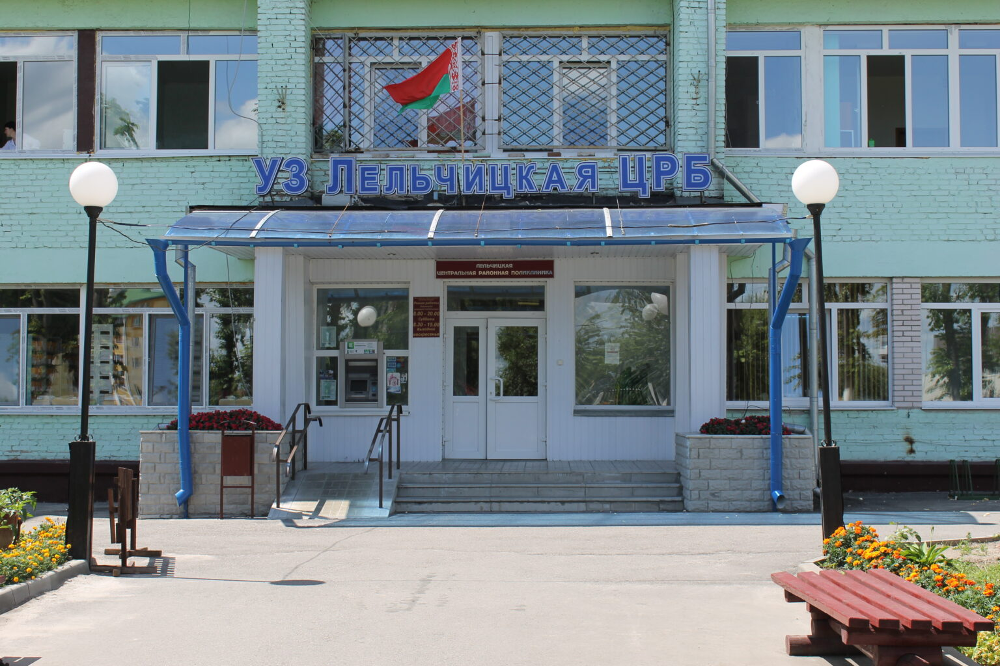
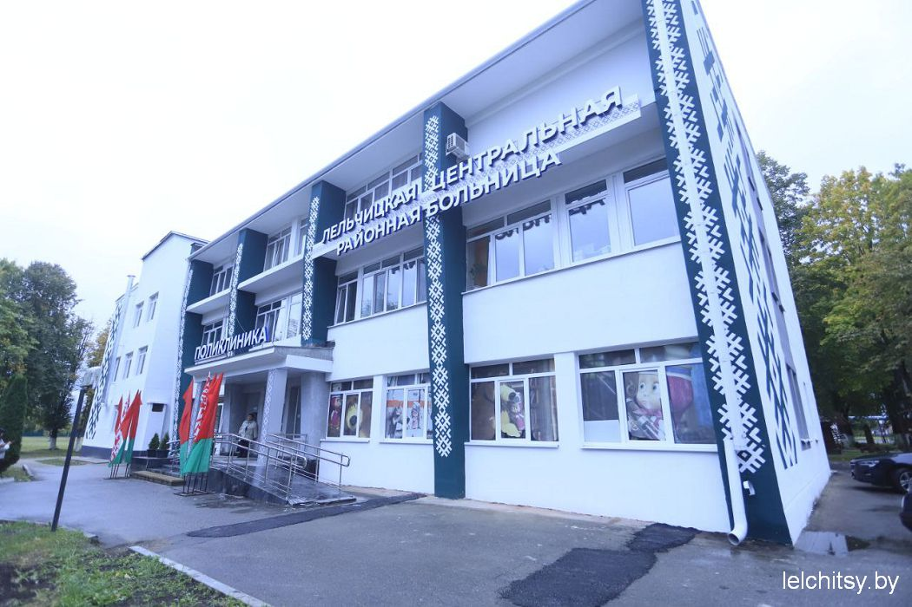

Фотозагадка № 1
Что изображено на фотографии?
Посмотри внимательно на снимок и выбери правильный ответ.
Выберите один из трёх вариантов ответа.
Проект районной газеты «Светлае жыццё»
Узнавай знакомые места, проверяй зоркость, вспоминай историю родного края и участвуй в жизни нашей газеты.
Узнаём. Вспоминаем. Участвуем.
Новости района. Истории земляков. Память о родных местах.
Перейти на сайт газетыВыбери своё приключение
Проверь свою память
Проверь, насколько хорошо ты знаешь знакомые места нашего города.

Фотозагадка № 1
Посмотри внимательно на снимок и выбери правильный ответ.
Выберите один из трёх вариантов ответа.

Фотозагадка № 2
Посмотри внимательно на снимок и выбери правильный ответ.
Выберите один из трёх вариантов ответа.
Внимание к деталям
Сравни две картинки и найди пять отличий. Внимательно осматривай детали — каждая найденная отметка приближает тебя к победе.
Пока это демонстрационная версия: отличия добавлены поверх фотографии. Позже можно подготовить специальную пару снимков Лельчиц с более естественными изменениями.
Вспомни публикации газеты
Проверь, что осталось в памяти после прочтения историй «Светлае жыццё».
Четыре вопроса по уже опубликованной статье. Вспомни заголовок, рубрику и главную мысль материала.
Открыть детективНаш информационный партнёр
«Светлае жыццё» рассказывает о жизни Лельчицкого района, его людях, событиях и истории. Читай свежие публикации на официальном сайте газеты.
Перейти на сайт газеты ↗Память места
Сравниваем архивные снимки с современными фотографиями и сохраняем истории знакомых мест.


Знакомое место, которое хранит историю нашего города. Сравните два снимка: что изменилось, а что осталось прежним?


Лельчицкая центральная районная больница — знакомое многим жителям место. Сравните, как изменился внешний вид здания.
Ваше мнение важно
Ответьте на три коротких опроса о районной газете «Светлае жыццё».